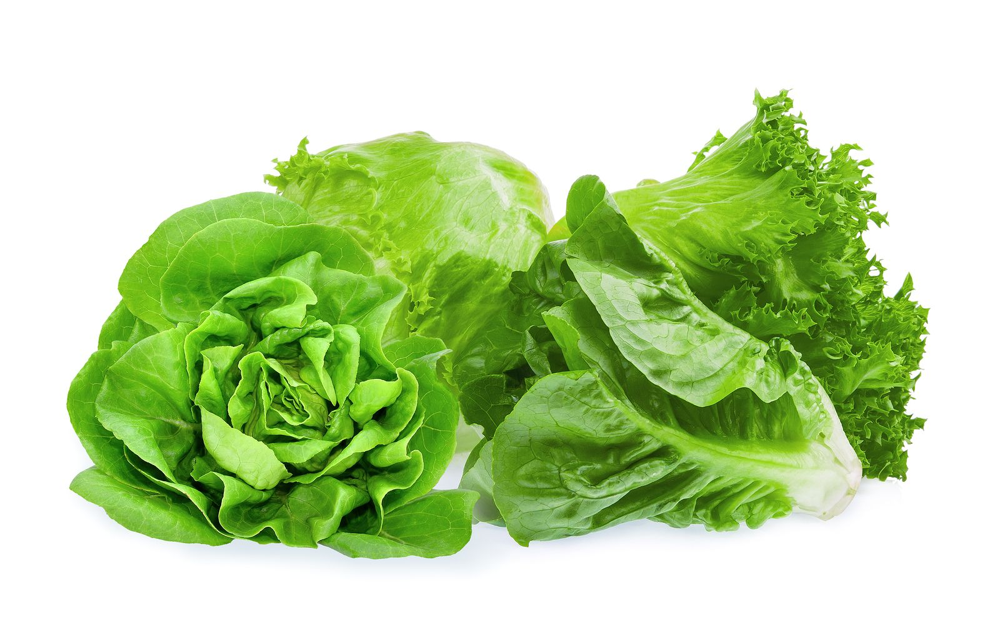

|
brocoli
Precio: 3.000
El brócoli posee una mayor riqueza en vitaminas y minerales respecto al resto de las crucíferas. Se destaca su contenido en vitamina A (en forma de beta-carotenos), vitamina C, ácido fólico, potasio y hierro. Su origen parece estar ubicado en los países del Mediterráneo oriental.
|
|
berenjena
Precio: 5.000
La berenjena es una hortaliza muy baja en calorías pero alta en nutrientes esenciales, y ejerce un efecto saciante muy potente en el organismo, por lo que te permite reducir el apetito y lograr reducir, por consiguiente, las cantidades de comidas que sueles ingerir
| |
| apio
Precio: 1.000
El apio debe parte de sus propiedades diuréticas a que ayuda a regular las bacterias en el intestino y esto, además de mejorar la digestión, facilita la absorción de nutrientes. Por esta razón es un alimento muy recomendado para ayudar a combatir o regular problemas de gastritis, agruras, reflujo y acidez.
| |
|
pimiento
Precio: 8.00
Tanto los pimientos morrones (rojos) como los verdes y los amarillos son ricos en vitamina C (tres veces más que las naranjas) y vitamina A. Es decir, contribuyen a la absorción del hierro, refuerzan el sistema inmunológico, son antioxidantes y mejoran la salud ocular.
| |
|
pepino
Precio: 1.000
De acuerdo con la Guía práctica de verduras de Consumer Eroski, el pepino aporta fibra, pequeñas cantidades de vitamina C, provitamina A y de vitamina E, y, en proporciones aún menores, vitaminas del grupo B tales como folatos, B1, B2 y B3. En su piel se encuentran pequeñas cantidades de beta-caroteno
|
|
zanahoria
Precio: 1.200
Es rica en fósforo, el cual vigoriza las mentes y cuerpos cansados. Es muy útil para eliminar los cólicos y favorece la digestión. Es un vegetal diurético que evita la retención de líquidos. No puede faltar en verano, ya que facilita el bronceado de manera saludable y totalmente natural.
| ||
 |
rábano
Precio: 2.000
En cuanto a usos medicinales el consumo de rábano en crudo se emplea para tratar deficiencias de vitamina C, urticarias y artritis; el caldo de su cocimiento es un excelente auxiliar en enfermedades respiratorias y desordenes gástricos.
 |
|
lechuga
Precio: 2.700
La lechuga es un alimento que aporta muy pocas calorías por su alto contenido en agua y su escasa cantidad de hidratos de carbono, proteínas y grasas. En cuanto a su contenido en vitaminas, podemos mencionar —con aportes poco significativos— la presencia de vitamina C, folatos y provitamina A (β-carotenos).
|